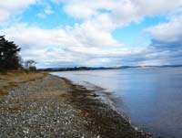
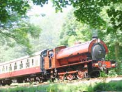
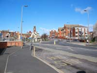
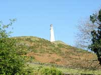
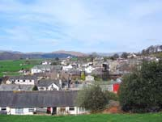
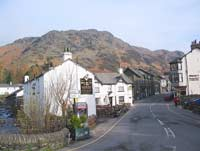
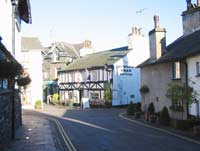
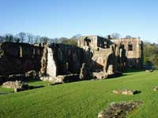
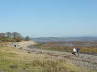

The Furness Peninsula of Cumbria
Sandwiched between the Lake District Fells, Morecambe Bay and the Duddon and Leven Estuaries, the Furness Peninsula is one of the regions gems. It is an area of lush farmland, hamlets, small villages and market towns, nature reserves and historical buildings extending from Ulverston, Broughton-in-Furness, Coniston, Hawkshead and the fringes of Lake Windermere to Barrow-in-Furness and Walney Island on the Irish Sea coast. It's a place to walk, hike or cycle tracks and trails along stretches of unspoiled coastline, quiet country lanes or classic routes over and around the Furness Fells. Wildlife flourishes in the nesting and wintering grounds of Walney Islands two nature reserves which are situated at each end of a popular safe child friendly beach, and along a coastline which has remained much as Nature intended where various species of birds, moths, butterflies, the Natterjack Toad and grey seals nest, colonise and thrive. As with much of the Lake District and Cumbria, The Furness Peninsula has fired the imagination of poets and writers to create verse, historical novels and much loved characters of children's books. |
|
 |
 |
| The Ulverston based poet, Peter Loney, writes movingly of the Furness Peninsula and speaks of a coastline where “ foot prints, hoof prints and tyre tracks wait for obliteration by the tide”. However, time nor tide has erased centuries old relics of history of the Peninsula and whilst not always complete, are vivid and potent enough to remind of the influences of Vikings, Romans, Celts and Monks who each in turn have helped shape the character of the area. There's both indoor and outdoor activities for all ages and all weathers including canoeing, kayaking, hang gliding, an award winning Wild Animal Park, pony trekking, museums, golf, fishing and the highly popular annual shows and events. Children will certainly not want to miss a trip on the Haverthwaite Steam Railway especially the Halloween Ghost Ride and the Santa Claus Christmas Special. Live music shows, comedy and drama in Barrows Forum entertainment complex is an enjoyable way to round off a day of sightseeing, or, take a leisurely meal of freshly prepared local produce and a glass of locally brewed ale in the relaxing atmosphere and convivial surroundings of one of the Peninsulas cosy pubs. The Furness Peninsula, standing as it does on the edge of the Lake Distict National Park and comfortably within range of the joys of the Lake District and Cumbria's fells, coastal and lakes scenery and, with convenient road and rail connections, is a storehouse of diverse attractions and activities to suit all styles of holiday breaks.Direct trains operate from Manchester Airport to Barrow-in-Furness, or visitors to the Furness Peninsula can travel on the West Coast mainline service to Lancaster and there change for local trains which run on the Furness Line. Trains from Leeds also connect to the Furness Line at Carnforth, the station made famous as the setting for David Leans 1945 film, “Brief Encounter”. Additionally, the Line can be accessed by a rail journey down the scenic Cumbrian Coastline from Carlisle. Furness Line station stops between Barrow and Carnforth are Roose, Dalton in Furness, Ulverston, Cark, Kents Bank, Grange over Sands, Arnside and Silverdale. For those travelling from the south of the country by road, leave the M6 at J36 and follow the A591 and A590 signposted Kendal, Newby Bridge and Ulverston. If travelling from the north, leave the M6 at J40 on the A592 and enjoy a wonderful scenic journey through Pooley Bridge, several miles alongside Lake Ullswater, the pretty villages of Glenridding and Patterdale and over Kirkstone pass to Windermere to join the A590 to Newby Bridge and Ulverston. |
|
Main Towns of Furness Peninsula |
|
 |
Barrow-in-Furness The largest town on the Peninsula is a mix of traditional and modern shops and stores and has one of the largest indoor markets in the region. For more about Barrow, go to our towns and villages information page. |
 |
Ulverston “The people of Furness in general and of Ulverston in particular are civil and well behaved to strangers, hospitable and humane” said Father Thomas West in 1774. This remains true to this day. Overlooked by the Sir John Barrow Monument on Hoad Hill, Ulverston is a “festival” town, a market town of small stores, speciality shops and, birth place of Stan Laurel. More about Ulverston on our towns and villages information page. |
 |
Broughton-in-Furness A charming old market town much favoured by visitors who arrive to explore and walk the beauty of the Duddon Valley and Estuary and the open spaces of the Furness Fells. More information on our towns and villages page. |
 |
Coniston Another great favourite of walkers and hikers on the edge of Coniston Water and close to the much loved Tarn Hows. More on our towns and villages information page. |
 |
Hawkshead Closely linked to William Wordsworth and Beatrix Potter, Hawkshead is a charming traffic free small town of whitewashed buildings, narrow streets, alleys, tea shops and traditional inns. More about Hawkshead on our towns and villages information page. |
| Dalton-in-Furness Once the capital of the Furness Peninsula, Dalton in Furness has endured a series of tragic events over the centuries. It is believed to have been established as a community in the 8th C and since then has experienced devastation by Scots raiding parties between 1301 and 1322, an outbreak of the Black Death in 1348, an outbreak of plague in 1631 when more than half of the population died and, not many years later in 1643 during the English Civil War, it was pillaged and looted as the defeated Royalist Army was pursued through Dalton by the Roundheads as they attempted to reach the comparative safety of their homes in and around Millom. Today,Dalton in Furness, standing between the larger towns of Barrow in Furness and Ulverston and some 15 miles from the southern end of Lake Windermere is a small friendly market town with a range of facilities including eating places, a 7 day a week food store, a family friendly liesure centre (with swimming pool, kids zone, solarium and gyms) a Post Office, High Street Banks, cash points, dispensing chemist, public toilets, bus, train and taxi services. Taxi Service. Andy Travel. Telephone 01229 462309. |
|
| Askam-in-Furness Askham in Furness combined with Irelith. Here is a chance to explore an unspoiled stretch of coastline of flora and fauna which is a breeding site of the very rare Natterjack Toad. Fine views over the Duddon Estuary. |
|
| Kirkby-in-Furness One of the Peninsulas larger villages with fine views to the Duddon Estuary and the Furness and Lakeland Fells. |
|
| Lindal-in-Furness Scene of when a 31 ton steam locomotive sank in a deep hole on a section of the Furness Railway in 1892. This was an event used as a storyline in a Thomas the Tank episode when Thomas, after tipping in to a hole is pulled to safety by Gordon The Big Engine. |
|
 |
 |
 Find out more information by visiting the Furness website: www.boostingfurness.co.uk Find out more information by visiting the Furness website: www.boostingfurness.co.ukYou may also download their very useful Discover Furness brochure here. The file is quite large (20mb) and may take some time to download with slower connections. Hard copies are available from the site also. Buying a hard copy entitles you to discounts at participating attractions. |
Furness Peninsula attractions |
||
| Barrow Dock Museum - "A unique building in a stunning coastal setting built within a dry dock" www.dockmuseum.org.uk |
Barrow Indoor Market - As seen on TV on The One Show and The Hairy Bikers www.barrowbc.gov.uk/Default.aspx?page=149 |
Dalton Castle - Stands above the town. Open from Easter to end of September on Saturdays. www.nationaltrust.org.uk/dalton-castle |
| Dalton Leisure Centre Comprises of a warm family-friendly swimming pool, Kid's Splash Zone, 3 squash courts, 2 Air-Conditioned gyms, Spinning room, solarium and an Air-Conditioned aerobics room. There is a large lounge area with a cafe bar and has viewing to both the pool and squash areas. The licensed bar is open Tuesday - Friday evenings from 7p.m. www.daltonleisurecentre.co.uk |
Furness Abbey The impressive remains of an abbey founded by Stephen, later King of England, including much of the east end and west tower of the church, the ornately decorated chapter house and the cloister buildings. www.furnessabbey.org.uk |
Furness Golf Club The sixth oldest golf club in England. www.furnessgolfclub.co.uk |
| Fishing Coarse, Carp and Brown Trout game fishing. www.ulverstonangling.org |
Gleaston Water Mill A substantial water powered corn mill, with the last major rebuild on the site being in the 1770's. www.watermill.co.uk |
Kayaking and Canoeing Duddon Canoe Club is an active canoe club based in the Barrow and Furness area of South Cumbria www.duddoncanoeclub.org.uk |
| Laurel and hardy Museum Opening Times: 10:00 AM – 5:00 PM. 7 Days per week Feb – Dec. CLosed Christmas and Boxing day. www.laurel-and-hardy.co.uk |
Manjushri Meditation Centre Conishead Priory near Ulverston. Manjushri KMC is a Buddhist meditation centre dedicated to the attainment of world peace by offering everyone the opportunity to develop lasting mental peace through meditation and related practices. http://nkt-kmc-manjushri.org/ |
Piel Castle The king welcomes you. www.pielisland.co.uk |
| Stott Park Bobbin Mill This extensive working mill was begun in 1835 to produce the wooden bobbins vital to the Lancashire spinning and weaving industries. Colton, near Ulverston. Tel: 0153 -531087 www.english-heritage.org.uk/daysout/properties/stott-park-bobbin-mill/ |
South Lakes Wild Animal Park Cumbria's unique open zoo. Probably the UKs best wildlife conservation Zoo Park and home to a wide vareity of wild animals from around the world. Dalton-in-Furness. www.wildanimalpark.co.uk |
|
| Wind Surfing and Kitesurfing www.northwestkitesurfing.co.uk www.walneywindsurfing.co.uk |
The A5087 Coast Road between Barrow in Furness and Ulverston via Rampside, Baycliff and Bardsea follows the fringe of Morecambe Bay. Great scenery, gentle walks and strolls, picnics and ice cream vans in the summer. | Birkrigg Common & Druids Circle overlooking Bardsea with fine views to the Hoad Monument which stands on the hill above Ulverston. |
| St. Michaels Church, Rampside The church stands on what is claimed to be one of the oldest religious sites in the Furness Peninsula. Neolithic and Viking relics have been discovered here together with the graves of “ancient mariners” and drowned sailors. |
Chapel Island This small rocky outcrop a mile or so from the shoreline at Bardsea is mentioned in The Prelude, Book Tenth by William Wordsworth in which he wrote “As I advanced, all that I saw or felt was a gentleness and peace”. However, it's now overgrown and there's little to see. The island measures approximately 400 metres long and 100 metres wide at the widest point. In the 14th C Cistercian monks erected a small chapel here as a refuge for travellers who may have been caught by the rising tide as they made the journey on foot from Cartmel to Conishead. Nothing remains of the original chapel but in the 1800's a pseudo-classical chapel ruin was built to “enhance” the view of the then owner of Conishead Priory. The island can be accessed on foot but should not be attempted at any time other than low tide and, and with local advice. |
|
Beaches |
|
| Roanhead A sandy beach 3 miles to the north of Barrow. Lovely scenery but strong currents make it unsuitable for swimming. |
Earnse Bay Situated on Walney Islands. Served by local buses, car parking facilities and very popular in the summer months. |
| Biggar Bank On the west coast of Walney Island. A mix of sand and pebble beach. Car parking and public toilets. |
Rampside A beach to the north of Barrow with a causeway leading to Roa Island which has public toilets, a pub, cafe and bus stop. |
Walks |
||
| Cistercian Way (Cumbria) A 24 mile walk between Grange over Sands and Roa Island. The route follows fringes of Morecambe Bay via woodlands to Hampsfell and Cartmel Priory,Cark and Holker Hall. From here the route continues over the sands at the Leven Estuary which should only be attempted with the guidance of a Sand Pilot. Otherwise, take a train to Ulverston where the route continues via Dalton in Furness and Furness Abbey to Roa Island. |
Cumbria Coastal Way Furness Peninsula sections of this long distance walk includes Grange over Sands, Greenodd, Ulverston, barrow, Askham in Furness, Kirkby in Furness and Broughton in Furness. |
Walk & Ride maps in the Furness Peninsula Showing easy to moderate walking and cycling routes with numerous viewing points providing excellent views over the Lake District and Cumbrian fells, Morecambe Bay and the Duddon Estuary. Maps available from Tourist Information Centres in the area. |
| Cycling Cycle & See Ulverston and Furness Peninsula. Five do-in-a-day circular rides available free from Tourist Information Centresand cycle shops in the area. |
| Most famous ghost story The Ghost of Furness Abbey. The Headless Monk on horseback who rides under the Sandstone Arch close to the Abbey Tavern. His death is more than likely connected to the times of the Reformation. |
| Tribute to the Furness Peninsula The Reverend Stebbing Shaw when on a visit to Furness Abbey in 1787 wrote “I was struck by the simplicity of northern manners where every native that passes by salutes you with a “good morrow”. |